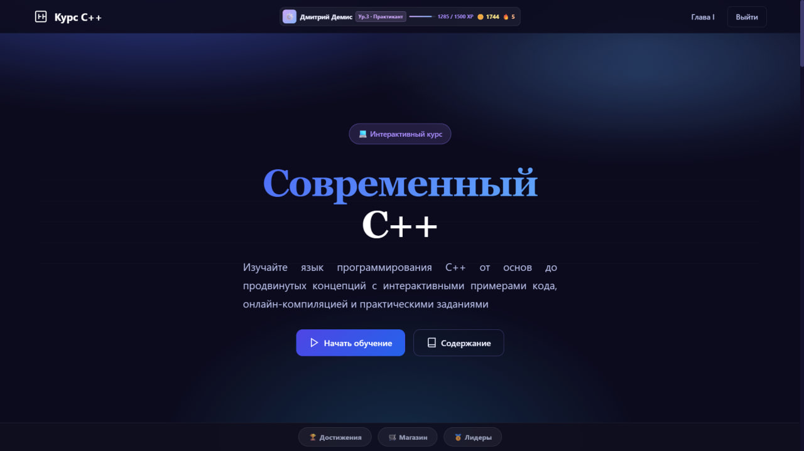
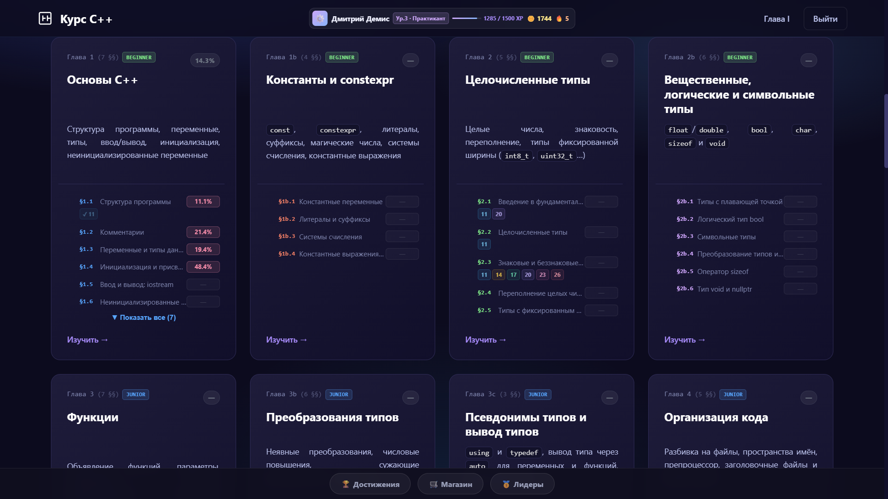
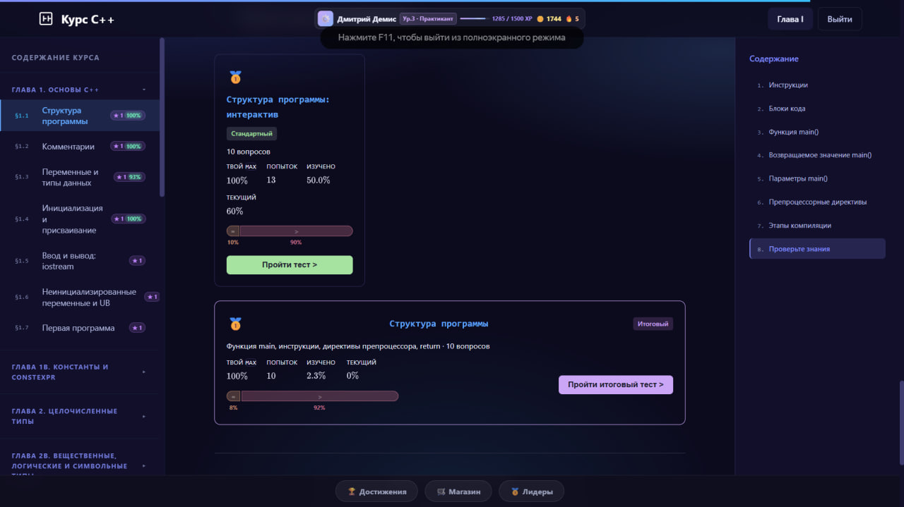
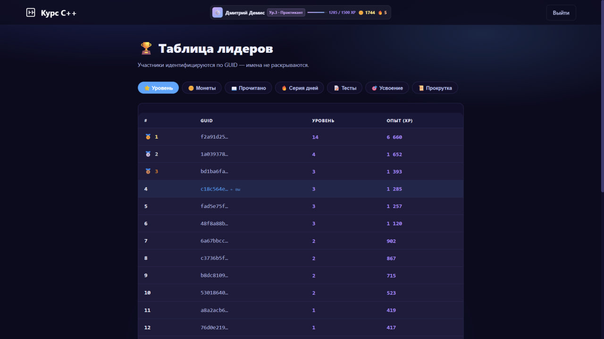

Разработка образовательной веб-платформы для изучения C++ c использованием геймификации
Студент
Дзюба Дмитрий Олегович
Научный руководитель
Макаревич Р. Д.
Программа
Программирование и интернет-технологии
Университет
ИТМО, 2026
Проблема
В сфере высшего технического и онлайн-образования существует проблема с низким уровнем вовлечённости студентов, фрагментарным усвоением материала и высокой долей отсева при освоении C++.
Это выражается в:
Механическом выполнении заданий
Быстром забывании концепций
Отсутствии мотивации из-за сложности
Сухости подачи теории
Последствия:
Преждевременное прекращение изучения языка, снижение конкурентоспособности
Трата времени на повторное объяснение базовых концепций
Огромная нехватка квалифицированных специалистов
Цель работы
Разработать веб-платформу «C++ Quest», которая повысит вовлечённость и качество усвоения материала
Геймификация
Квесты, достижения, внутренняя валюта для открытия доступа к темам
Интервальное повторение
Алгоритмы для закрепления знаний и концепций C++
Мгновенная обратная связь
Автоматическая проверка с объяснениями
Визуализация прогресса
Единая точка входа с синхронизацией
Ожидаемые артефакты:
Веб-платформа с модулями теории, геймифицированной практикой и интервальным повторением
Методические рекомендации и техническое описание API
Дашборд с аналитикой прогресса
Входные данные
Загрузка данных...
Традиционное обучение. Проблемы
Трудности и мотивация студентов
Загрузка данных...
Задачи исследования
Для формирования успешного пользовательского опыта необходимо решить следующие исследовательские задачи:
Анализ проблем и обоснование стека
Исследовать причины низкой вовлечённости при изучении C++, проанализировать существующие платформы и обосновать выбор технологий
Формирование требований
На основе опросов студентов сформулировать функциональные и нефункциональные требования к платформе
Проектирование педагогических алгоритмов
Разработать модель интервального повторения, систему геймификации и разнообразные типы тестовых заданий
Проектирование архитектуры
Спроектировать многослойную архитектуру веб-приложения, схему БД и спецификацию API
Разработка прототипа
Реализовать модули: интерактивная теория, браузерный компилятор, система тестирования, геймификация, статистика
Проверка эффективности
Протестировать на выборке студентов, собрать метрики вовлечённости и качества знаний, провести сравнительный анализ
Ключевые исследовательские вопросы:
Как адаптировать интервальное повторение под программирование?
Как сбалансировать игровые механики, чтобы они мотивировали, а не отвлекали?
Как влияет разнообразие форматов вопросов на удержание внимания?
Как учитывать историю ошибок при тестировании?
Какие давать вопросы, чтобы студент понимал, а не запоминал ответы?
Как разработать систему для применения к другим языкам?
Архитектура системы. Контекст

Архитектура системы. Контейнеры

Архитектура данных

Результаты исследования. Сравнение форматов
Загрузка данных...
Результаты исследования. UX и Интерактивность
Встроенный компилятор
60% оценили на 10/10
Дизайн и оформление
73% оценили на 10/10
Анимации
Отлично
Разнообразие заданий
85% оценили на 10/10
Лучшие типы заданий для запоминания
«Что выведет код?»
Восстановление кода
Ввод ответа вручную
Вывод: Интерактивные элементы (компилятор, разнообразные типы заданий) получили наивысшие оценки и являются ключевым преимуществом платформы
Отзывы пользователей
«Тесты после каждого параграфа очень удобны и помогают закреплять материал. Нравится разнообразие контента.»
«Автор показывает лучшие практики использования C++. Такой подход формирует правильное мышление разработчика.»
«Визуальная составляющая и понятная подача материала. Всё устроено так, чтобы запомнить побольше.»
«Краткость и лаконичность информации, разнообразие тестовых заданий. Геймификация повышает мотивацию.»
«Хорошая подача материала, визуальное оформление на высоте. Интерактивный формат повышает вовлеченность.»
«Знания, полученные на сайте, очень помогают в выполнении лабораторных работ и подготовке к экзамену.»
«Оформление и вовлеченность через достижения и покупки. Улучшать можно только качество и объем информации.»
«Очень хорошие оформление и структура, информации много, удобно изучать и повторять.»
«Геймификация обучения повышает мотивацию, поощряет регулярную практику, делает сложное проще.»
«Основное преимущество данного способа обучения по сравнению с «академическим» заключается в полноте. Сейчас поясню. Приходя на лекции, за 3 часа я получаю кучу информации, из которой лишь малую часть буду использовать в грядущей лабораторной работе и, соответственно, только эту малую долю запомню. Например, я вообще забыл про list-инициализацию, поскольку банально не использовал её или не знал, что при сравнении беззнакового и знакового типа творится такой капец. Именно потому, что нам об этом говорили, но это не отложилось в моей голове, так как не возникло такой проблемы при выполнении лабы. В случае с тестами после параграфа разработчик явно указывает, какая информация важна и ценна для запоминания, что помогает в «полноценном» понимании. Материал читается и усваивается легко, приятно разделён на логические блоки без лишней воды, текст понятен даже без особых знаний языка. »
«Мне, как студенту 1 курса, который прямо сейчас изучает C++ в университете, очень понравилось, что автор сайта рассказывает не только о том, «что есть в языке», но и сопровождает материал примерами лучших практик. Например, объясняется, почему предпочтительнее использовать константы времени компиляции вместо макроопределений или почему в современных стандартах следует отдавать предпочтение list-initialization перед другими способами инициализации объектов. Такой подход формирует правильное инженерное мышление и позволяет принимать обоснованные решения, располагая несколькими альтернативами.»
Текущая реализация
Прогресс разработки
Технологический стек
Frontend
- HTML5 / CSS3 / JavaScript ES6+
- Модульная архитектура компонентов
- Web Workers для компиляции
- Адаптивный дизайн (mobile-first)
Backend
- C# / ASP.NET Core 10
- Entity Framework Core
- RESTful API
- SQLlite Server
Компилятор
- Compiler Explorer API
- GCC / Clang (браузерный)
- Sandbox-изоляция кода
Инструменты
- Git / GitHub
- JSON для хранения тестов
Демонстрация платформы




Заключение
Достигнутые результаты
- ✓Разработан прототип интерактивной платформы для изучения C++
- ✓Реализована система геймификации и мотивации
- ✓Интегрирован встроенный компилятор для практики
- ✓Проведено исследование с 30 студентами
- ✓Получен рейтинг 8.4/10 (на 2.5 балла выше ВУЗа)
Ожидаемый вклад
- →Повышение мотивации студентов к изучению C++
- →Улучшение качества усвоения материала
- →Сокращение времени на поиск информации
- →Визуализация прогресса обучения
- →Конкурентоспособность студентов
«80% респондентов отметили, что платформа заметно лучше традиционных методов обучения в ВУЗе и онлайн-курсов»